1. Generatif üretim (Eşeyli)
2. Vejetatif üretim (eşeysiz
3. Çelikle Üretim
A. Gövde çelikleri ile üretim
• Sert odun çelikleri ile üretim
• Yarı odun çelikleri ile üretim
• Yumuşak (yeşil) odun çelikleri ile üretim
B. Yaprak çelikleri ile üretim
• Gözlü yaprak çelikleri
• Gözsüz yaprak çelikleri
• Yaprak damarları üzerinde yaralama yapmak
C. Kök çelikleri ile üretim
• Stolon uçları ile üretim
• Daldırma ile üretim
• Ayırma ile üretim
• Aşı ile üretim
4. Tohum ile üretim
• Çimlenme
• Çimlenme engeli
Tohum ile üretim
Ekim derinliği: Normal büyüklükteki tohumlarda ekim derinliği tohumun 1-2 katı kadardır. Çok ince tohumlar düzeltilmiş ortam üzerine serilir, üzeri ortam malzemesi ile hafifçe kapatılır (ortam mutlaka düzeltilmeli, gübreye gerek yok, güneşe gerek yok, ortam sıcaklığı şeffaf kapak ile kapatılarak korunmalı).
NOT: Ekilen tohumların üzeri çimlenme görülünceye kadar plastik bir örtü, cam bir kapla kapatılarak nemin ve sıcaklığın aynı seviyede tutulması sağlanır.
Repikaj (Şaşırtma)
Tohumların çimlenmesinden bir süre sonra fidecikler; birbirinin beslenme, havalanma ve ışık alımlarını engellerler. Kaliteli fide elde edebilmek amacı ile fidecikler beş gerçek yapraklı iken başka bir ortama aktarılmalıdır. Bu işleme şaşırtma adı verilir.
Çimlenme engeli
Tohumun çimlenmesi için gerekenler:
1.Sıcaklık
2. Nem
3. Hava
Tohumun çimlenme sürecinde meydana gelen olaylar:
1. Tohumun su alması
2. Metabolik faaliyetlerin başlaması
3. Embriyonun büyümesi (Tohumun şişmesi)
Kabuk engeli
Tohum kendisi (suda yüzenler ekilmez)
Çimlenme engeli giderici işlemler
1. Asit ile işlem
(Kabuk engelini aşar) Kabuk kalınlığından kaynaklanan çimlenme engelini ortadan kaldırır. (H2SO4 kullanılır, bu çalışma aside dayanıklı özel ekipman gerektirir. Bir çok türde tohumu 5-60 saniye aside bastırmak yeterlidir. Kağıt gibi incelince işleme son verilmelidir.
2. Mekanik zedeleme
Kabuk engelini aşar. Bu engeli aşmak için tohum kabuğuna zarar vermek-aşındırmak gerekmektedir. Çeşitli aşındırma aletleri kullanılabilir (törpüleme-zımparalama aletleri).
3. Sıcak suda şişirme (metabolik faaliyetleri başlatır)
Tohumların hacimlerinin 4-5 katı sıcak suya belirli süreler için bırakılma işlemidir. Sıcak suda kalma süresi tohumun şekline, yapısına göre değişmekle beraber bu süre 1-24 saat arasında değişiklik göstermektedir. Örneğin Yalancı Akasya tohumları 75o de 2 saat tutulur. Ardından normal suda bekletilir. Bu işlem biter bitmez tohumlar hemen ekilmelidir. Şişen ve şişmeyen tohumlar ayrılarak gerektiği durumlarda işlem tekrarlanabilir.
4. Soğuk suda şişirme (metabolik faaliyetleri hızlandırır)
Bu yöntem Ladin, Sedir, Nar gibi iğne yapraklı türlerde iki haftaya varan uygulamalarda iyi sonuç vermektedir (hergün değiştirilip + aspirin).
5. Sıcak ve soğuk katlama
(Kabuk engelini aşar. Metabolik faaliyetleri başlatır)
Tohumlar nemli havalanabilen perlit, dere mili, torf, talaş-ağaç talaşı- gibi ortamlarda belirli sürelerle belirli sıcaklıklarda bekletirilir.
Amaç: Sıcak katlama ile mikroorganizma faaliyetlerini arttırarak kabuğun çürümesini hızlandırmaktır. Sıcak katlama türlere bağlı olarak günlerce, haftalarca sürebilir. Sıcaklık dereceleri türlere göre değişiklik gösterir.
Soğuk katlama ile embriyo olgunlaşması, metabolik faaliyetlerin başlaması sağlanır. Örneğin: Viburnum-Kartopu türlerinde 20oC de sabit sıcaklıkta sıcak katlama daha sonrada soğuk katlama yapılır (+4 oC).
1. Sert odun çelikleri ile üretim
1 yıllık tercih edilir, sonra 2 ve 3 yıllık.
Kışın yapraklarını döken, her dem yeşil ağaç ve çalıların üretiminde kullanılan tekniktir (yaprak dökenlerde döktüğü anda).
Odun çelikleri kışın yaprağını döken bitkilerde yaprak dökümünde bir yaşındaki dallardan alınır (adi, dipçikli, ökçeli olarak hazırlanabilir).
• Adi çelik: yalnız o yılın (1 yıllık) sürgününü içerir.
• Ökçeli çelik: çeliğin tabanında önceki yılın odunundan küçük bir parça içerir.
• Dipçikli çelik: Daha yaşlı dalın 1-2 cm uzunluğunda tam bir parçasını içerir.
Sert odunla (çelikle) meyve türleri, söğüt, kavak, yalancı ardıç; bu türlerde köklenme çabuk olur.
2. Yarı odun çelikleri ile üretim (her dem yeşil)
Özellikle her dem yeşil ağaç ve çalıların üretiminde kullanılan bir tekniktir. Bu çelikler ilkbahar-yaz aylarında büyümenin başlamasından ve sürgünlerin kısmen odunlaşmasından alınır.
Adi, dipçikli, ökçeli olarak hazırlanabilir. Çelikte tam yaprak bırakılmamalı. Örnek : Pitos porum, Akuba, Açelya, Taflan, Kamelya, Karayemiş.
3. Yumuşak odun çelikleri ile üretim (İlkbaharda-her demyeşil)
Bu çelikler odunsu bitkilerin etli, yumuşak yeni ilkbahar sürgünlerinden alınır. Çelikler alınacak bitkiye bağlı olarak vejetasyon dönemi boyunca hazırlanabilir.
Açelya, kadın tuzluğu-Berberis, kelebek çalısı, kızılcık, dağ muşmulası-kotenesvar, hanım eli, sarmaşık, kartopu türleri.
Gözlü yaprak çelikleri ile üretim
Gözlü yaprak çeliği bir yaprak ayası, yaprak sapı ve üzerinde göz bulunan kısa bir dal parçasından oluşmaktadır.
Uyanmamış göz : dipçikli olarak kesilerek suyun içinde biraz bekletildikten sonra perlit içine dikilir.
Gözsüz yaprak çeliği ile üretim
Bu yöntemde yaprak ayası sapı ile beraber alınır köklendirme ortamına sap kısmı kalacak şekilde dikilir.
Sardunya, afrika menekşesi, begonya çeşitleri vs.
NOT:Kullanılacak yaprak olgun bir yaprak olmalıdır. Köklendirme ortamında su kullanılacak ise hergün değiştirilmelidir. Ortam malzemesi olarak nemlendirilmiş perlit yada dere mili kullanılmalıdır.
Yaprak gereğinden büyükse ufaltılır.
Yaprak damarlarında yaralama yaparak.
Olgun yaprak bitkiden ayrılır, damarlar kesişme yerlerinden steril bir jiletle çizilir veya parçalara ayrılır. Yaprağın alt yüzeyi ortam malzemesine yatırılır. Ortamla temas çok iyi sağlanmalıdır (tel, kürdan, ağırlıkla neme baskı yapılır).
Kök çelikleri ile üretim, köklerinde adventif göz bulunduran bitkilerde uygulanır. Çelikler 3-6 cm uzunluğunda hazırlanabilir (yaşlı olmayan, kalem kalınlığında). Bu amaçla 1-2 yaşındaki fidanların kökleri kullanılmaktadır. Kök çeliklerinin dinlenme döneminde alınması başarıyı arttırır. Hazırlanan çelikler ortama yatay olarak yerleştirilir ve üzerleri ortam malzemesi ile kapatılır (Tohumdaki gibi kendi kalınlığı kadar bir örtü. Bu yöntemle bir çok bitki üretilebilir. Frenk üzümü, kiraz, kara yemiş bu yönteme çok hızlı cevap verir. Vejetatif bir üretim olacaktır ve yeni bitki anaca benzeyecektir.). Örnek: alev, ilex, orman gülü, avize çiçeği, gül ibrişim, kiraz, karayemiş, erik, frenk üzümü, alıç.
Bu yöntem stolon oluşturabilen bitki türlerinde uygulanır. Bitkinin uç kısmında genç bitki taşıyan stolonlar kesilerek ana bitkiden ayrılır ve içinde köklendirme ortamı bulunan (perlit, dere mili) kalıplara dikilmelidir. Örnek : eğrelti türleri, kondela, çilek.
(kökü ayrılabilir bitkiler, saçak kök yapan bitkiler)
Bu yöntem kökü ayırmaya müsait bitkilerde uygulanabilir. Uygulama ana kökten yavru köklerin ayırılması şeklinde yapılır. Bitki latent döneminde iken yapılmalı. Bitki bunu farketmemeli.
Adi daldırma
Daldırma yapılacak bitkinin dalları esnek ve kıvrılabilir nitelikte olmalıdır. İyi bir kök oluşumu için sürekli neme, iyi bir havalanmaya ve köklenme bölgesinde bitki türüne göre değişen optimum sıcaklık seviyelerine ihtiyaç vardır. Adi daldırmada gövdenin alt kısmındaki bir dal yay şeklinde kıvrılarak toprağa gömülür ve ucu topraktan çıkartılır. Daha önce toprak içinde kalacak olan gözün altından bir çentik, yara açılır. Ayrıca dalın gövdeye kadar olan bütün gözleri köreltilir (yapraklar da alınır. Sonbahar sonu veya erken ilkbaharda yapılabilir).
Yılan kavi daldırma
Uzun sürgünlere sahip bitkilerde sürgünün bir kaç kez toprağa kavisli olarak daldırılmasına yılan kavi daldırma denir.
Hava daldırması
Bu yöntem daha çok alt dalları toprak yüzeyine dek bükülemeyen bitkilerde uygulanır. En uygun zaman mayıs-temmuz ayları arasıdır.
Nasıl uygulanır?
Daldırma yapılacak gövde üzerinde, toprak yada ortam malzemesi ile buluşacak kısımda en az 3-4 göz bulunmalıdır. Sürgün üzerinde steril bir jilet-bıçak ile bir yara yeri açılır. Yaranın veya çentiğin arası ortam malzemesi doldurularak açık tutulmalıdır. Daha sonra plastik bir örtü (pet şişe gibi) yarayı çevreleyecek şekilde bitkiye sarılır. Plastiğin içi nemli köklendirme materyali ile doldurulur (perlit, dere mili, torf veya ince talaş). Köklendirme materyali sürekli nemli tutulmalıdır (İlkbaharda yada daha sıcak havalarda olmalı, Haziran-Temmuz. En az bir yaşındaki dal ve sürgün dalı olacak).
(Vejetatif bir teknik, yeni bitki kendine benzer.)
Aşılamada amaç iki farklı yapıdaki bitkinin üstün niteliklerinin biraraya getirilmesi ve bu özellikleri taşıyan tek bir bitkinin yetiştirilmesidir.
Aşı ile üretim tekniği
Üretilmesi istenen bitkinin bir parçasının (göz veya kalem), kökünden faydalanılmak istenen başka bir bitkiye kaynaştırılarak tek bir bitki olarak yetiştirme tekniğidir.
Göz aşısı ve kalem aşısı olmak üzere iki yöntem uygulanır.
Aşının başarısını etkileyen faktörler:
1. Anaç (altlık) ile kalemin birbiri ile aşılanabilir olması gerekir. Her istenen bitkiden alınan kalem istenen bir başka bitkiye aşılanmaz. Bitkiler botanik akrabalık ilişkiler bakımından birbirlerine ne kadar yakın olurs aşıda uyuşma şansı o kadar yüksek olur.
2. Aşıda anacın (altlığın) tohumdan elde edilmiş (çöğür), genç ve sağlıklı olması önemlidir. Bunlar zararlı, hastalık, kuraklığa dayanıklı ve uzun ömürlü olurlar.
3. Kalemler uygun zamanda alınmalı ve aşı uygun zamanda yapılmalıdır.
4. Kalem ve anacın kambiyumu mümkün olduğunca sıkı bir şekilde üstüste gelmelidir. Çünkü iki parça arasındaki açıklığı doldurmak üzere Kallus kolaylıkla oluşur (yara hormonu) ve yara hızla kapanır.
5. Aşı yeri aşılamadan hemen sonra uygun materyalle kapatılmalıdır (aşı macunu, aşı bağı). Bu şekilde aşı yerinde kuruma ve çeşitli enfeksiyon tehlikeleri önlenmiş olur. Bazı aşı türlerinde macunlamadan önce aşı yerinin sarılması da gerekebilir.
6. Aşılamadan sonra uygun bakım şartları yerine getirilmelidir. Özellikle anaçtan çıkan sürgünler azaltılarak anaç, kalem arasında özsu sirkülasyonunun yeterli olması sağlanmalıdır.
7. Hava, nem ve sıcaklık şartları uygun olmalıdır.
8. Kalem veya gözün anaca doğru takılmış olması gerekir.
9. Aşının başarı oranı bitkinin türü (anaç, göz), koşullara uygun aşılama yönteminin seçimi ve deneyimli bir aşıcı ile daha da yükselir.
10. Kalem veya gözün hastalık etmenleriyle bulaşık olması, aşıdaki başarıyı azaltır.
T-Göz aşısı
Anaç üzerinde kabuğun T şeklinde kesilmesinden dolayı bu isimle adlandırılır. T göz aşısı sağlıklı, iyi gelişmiş ve vejetasyon devresi içerisinde (su yürümüş) ve kabuğun odundan kolaylıkla ayrıldığı dönemde olan anaçlara uygulanır.
Anacın genç olması (1-2 yaş) başarıyı arttırır. Gözlerin alınacağı kalemin 1-2 yaşlarında, ağacın güneş gören dallarından alınması (tepe kısımları daha iyi güneş alır ve iyi olur.) kaliteyi arttırır.
Aşılamada kullanılacak olan kalemler, nemli, serin ve gölgelik bir yerde aşı yapılana kadar bekletilebilir. Gözlerin taze olarak kullanılmasına özen gösterilmelidir.
Uygulama
İlk önce anaç üzerinde yerden 5-15 cm yükseklikte iki boğum arasına (iki göz arası) yaklaşık 2 cm uzunluğunda dikey bir kesim yapılır. Bunu T şeklini verecek biçimde üstten yatay çizgi izler (derinlik sadece kabuğun yırtılacağı kadardır). Hazırlanan göz yerleştirilir ve rafya ile bağlanır (aşı macunu bu yöntemde kullanılmaz). Aşı yerinde boğulma olmaması için aşı bağı bir müddet sonra çözülmelidir (örneğin en az 21 gün, obur dala aşı yapılmaz, meyve gözü seçilmemeli).
Gözün alınacağı sürgünün dal sürgünü olması gerekmektedir. Meyve verecek olan sürgünlerden kalem alınmaz.
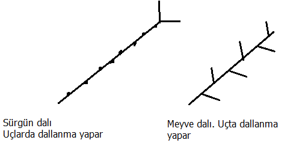Aşı yerine su püskürtülmesi faydalıdır. Su kaybını önler.
Yama göz aşısı
(Cevizde banko aşıdır. Çift ağızlı bıçak ile yapılır)
Özellikle ceviz gibi kalın kabuklu türlerde yüksek başarı gösteren bir aşıdır. Gerek anaç gerekse kalemden kabuk parçasının çıkartılması için çift ağızlı özel bir bıçak kullanılmaktadır.
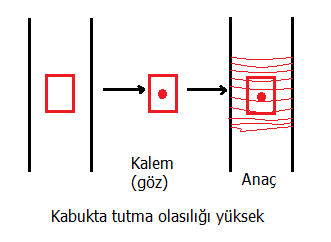Odunun kısımları
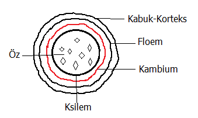Bindirme (kopulasyon) aşı
Öz ve kambium çakışması gerekir. Genç fidanlarda yapılır. 3-4 göz bulunmalı. Kalemde kesim yüzeyi 45o gibi bir eğime sahip olmalı. Özün çok iyi ortaya çıkması lazım.
Dilcikli aşı
Aşılanacak olan anacın çapı ile kalemin çapı aynı olmalıdır. Anaç ve kalem kambiyumu yeteri kadar açığa çıkaracak şekilde eğik olarak kesilmelidir. Kesilen bu yüzeyler birbirleri ile iyice çakışacak şekilde birleştirilerek sıkıca bağlanır (Macun kalemin kesilen en üst tarafına sürülür, kalemin anaca girdiği yerdeki yarığa aşı macunu sürülmemelidir. Çok gerekiyorsa çubuklarla desteklenen mucamba ile korunabilir).
Özellikle cevizde uygulanır. Ufak bir dil-yarık açılır. Kopulasyon aşı gibidir.
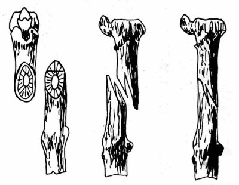NOT:Genelde aşıda su yürüdüğü dönem daha uygun. Bu bütün aşılarda geçerli. Anaç her zaman uyanık olmalı.
Yarma aşı
Aşılanacak anacın tepesi düz bir şekilde kesilir. Kesilen yüzey, keskin bir bıçak ile düzeltilir. Pürüzleri giderilir. Daha sonra özel aşı baltası ile vurularak anacın öz kısmına denk gelecek bir yarık oluşturulur. Aşı kalemlerinin uçları uygun şekilde hazırlanarak anaca yerleştirilir.
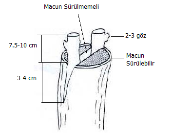Kalemin:
1. Güneş gören
2. Bir yaşında
3. Sürgün dalından
4. Hastalık taşımayan
Bir anaçtan alınması gerekir.
Yarığın her iki tarafına da aşı kalemi yerleştirilmelidir. Kalemde mutlaka 2-3 göz bulunmalıdır. Aşı yeri aşı bağı ile sıkıca bağlanıp yara yüzeyine aşı macunu sürülmelidir (anaç aktif olmalı, vejetasyon döneminde).
Kakma Aşı (Keçi ayağı, Tiryangola)
Yaşlı ağaçlarda kullanılan garanti bir aşıdır. Yara yüzeyi daha az.
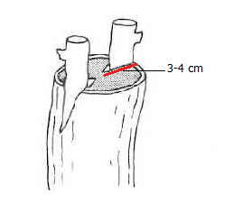Yöntem anacın kalemden kalın olduğu durumlarda yarma aşının yerini alır. Avantajı, yarma aşıdaki derin yarığa bu yöntemde gerek yoktur. Yara yeri daha az olacağından anaca hastalık etmenlerinin girişi de önlenmiş olur.
Omega aşı
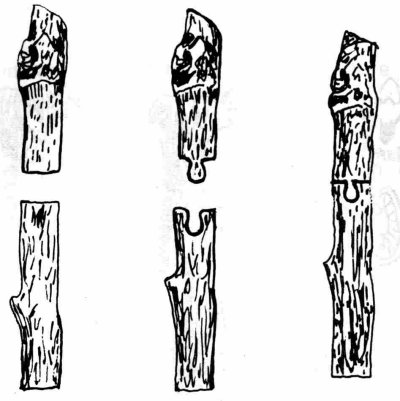Kabuk aşısı
I şeklinde sadece kabuğu kesiyoruz. Kalemin anacın kabugu tarafından kapanacak kısımlarının kabuğu soyulur. Kalemin dışarıda kalan kısımlarının kabuğu soyulmamalıdır.
| 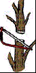 | 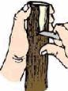 | 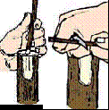 | 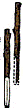 | 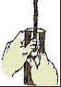 | 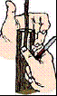 |
Yan kenar aşı
Özellikle iğne yapraklılarda yaygın kullanılan aşı çeşididir. Anacın gövdesinin alt kısmında var ise iğne yapraklar uzaklaştırılarak temiz bir gövde yüzeyi ortaya çıkartılır. Anaç gövdesi üzerinde alt kısımda kabukta bir dil bırakılır. Kalemde de benzer bir kesit oluşturulur. Kambiyumlar üst üste gelecek şekilde aşılama yapılır.
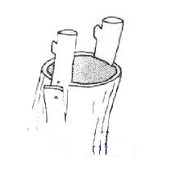 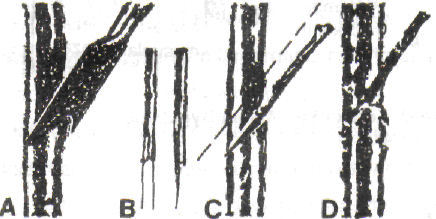Aşılama zamanları
| 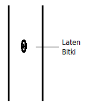 | 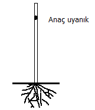 |
A. Sürgün göz aşıları
Erken sürgün göz aşıları
• Gözler latent halde alınıp (0-4 C) de anaç aktif olana kadar saklanır
• Anaçta özsu yürüdüğünde aşılama yapılır
Geç sürgün göz aşıları
• Daha geç yani vejetasyon dönemi ortasında yapılır
• Yapıldığı andan itibaren büyümeye devam eder
| 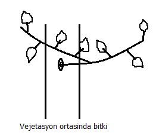 | 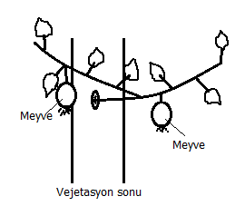 |
B. Durgun göz aşıları
• Aşı vejetasyon sonu yapılır
• Gözler de bu dönemde alınır
• Aşı yapıldığı yıl sürgün vermez